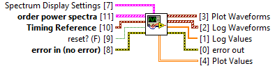
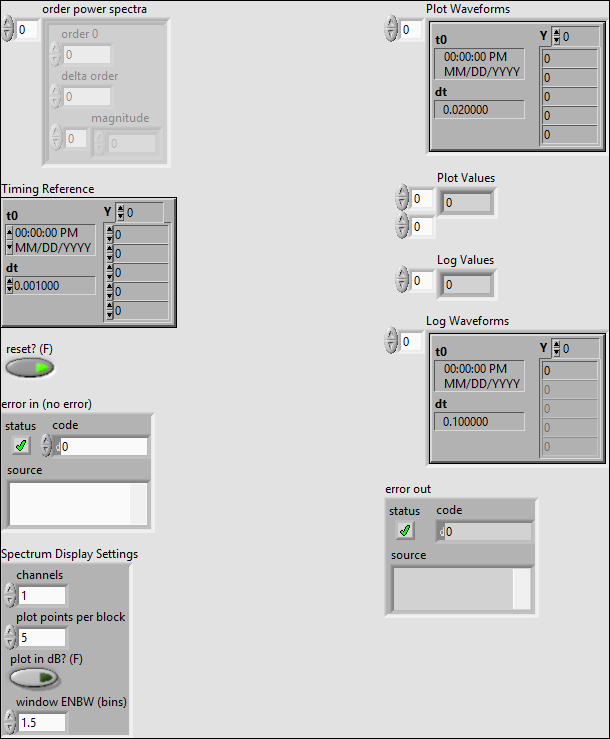
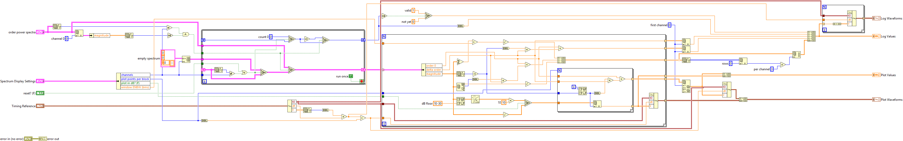

Turns an order power spectrum (OAT Order Power Spectrum output, linear power EU^2 rms, dB on? = FALSE) into FlexLogger channels for the plug-in Process.vi.
order power spectra = 1D array of {order 0, delta order, magnitude}, one element per channel (Build Array the single-channel output). An empty magnitude (no new spectrum this block) keeps the last spectrum, so every channel is written every block.
Timing Reference = any input waveform of this block (t0 and block length).
Plot Waveforms (to Write 1D Wfm, Auto Calculate T0 = TRUE): Order Axis, then one Order Spectrum per channel. Each is a burst of 'plot points per block' points per block, dt = block length / plot points. On a FlexLogger XY Graph map Order Axis to X and Order Spectrum to Y. Points past the last bin repeat the last bin.
Log Waveforms: 1-point waveforms, dt = block length: Spectrum Valid (0/1), Spectrum Count (spectra since reset), Order Resolution, Max Order, then per channel Overall Level (EU rms over the whole order range, divided by window ENBW), Peak Order, Peak Amplitude (EU rms of the highest bin).
Log Values and Plot Values carry the same numbers as plain arrays (for tests).
reset? TRUE on the first Process call after Configure Session clears the held spectrum and the count.


